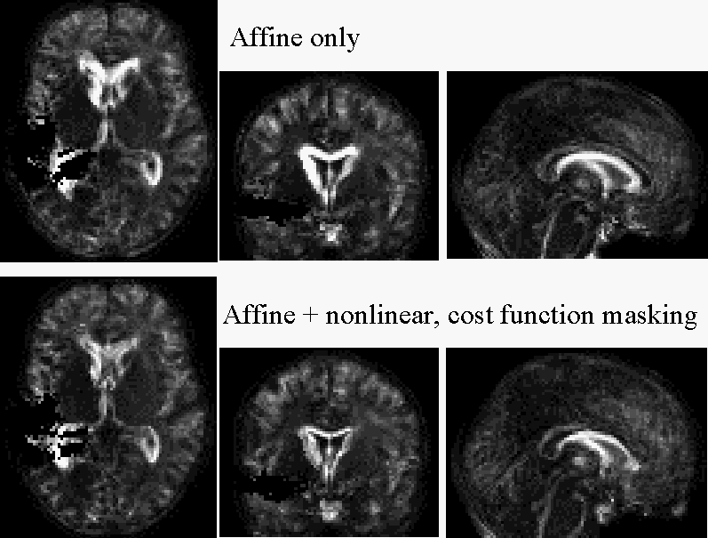

,
Alex Leff
,
Alex Leff , John
Ashburner
, John
Ashburner MRC Cognition
and Brain Sciences Unit, Cambridge, UK MRC Cyclotron
Unit, London, UK Functional
Imaging Laboratory, London, UK
,
Alex Leff, John
Ashburner
MRC Cognition
and Brain Sciences Unit, Cambridge, UK MRC Cyclotron
Unit, London, UK Functional
Imaging Laboratory, London, UK
MRC Cognition
and Brain Sciences Unit, Cambridge, UK MRC Cyclotron
Unit, London, UK Functional
Imaging Laboratory, London, UK
,
Alex Leff, John
Ashburner
MRC Cognition
and Brain Sciences Unit, Cambridge, UK MRC Cyclotron
Unit, London, UK Functional
Imaging Laboratory, London, UK
NeuroImage (2000) 11, S566
The work from this abstract is published as Brett, M., Leff, A. P., Rorden, C., & Ashburner, J. (2001). Spatial normalization of brain images with focal lesions using cost function masking. NeuroImage, 14, 486-500
Abstract
There are many situations where it may be important to align a structural image
of a damaged brain to that of a standard brain. For example, it may be easier
to appreciate the site of a lesion in relation to other brain structures after
such an alignment, and easier to compare the position of a lesion to a similar
lesion in another patient. There may be functional data that is registered to
a structural image, and we may want to compare the distribution of the functional
data across patients, or between patients and controls.
Unfortunately, the abnormalities in such images can make it dangerous to use standard automated image coregistration techniques. This is because most automated techniques attempt to minimize some cost function, calculated across the whole brain, that reflects the amount of difference between the image to be coregistered (the object image) and the image to register to (the template image). Lesions usually have different signal intensity from normal brain, and this results in a large contribution to apparent image difference, even when the object and template image are well matched outside the area of the lesion. In such cases, the minimization algorithm may estimate inappropriate transformations, in order to register the lesion area to normal brain.
Affine coregistration is relatively robust to such influence, because affine transforms that minimize lesion / template difference are usually constrained by the effects of the transformation in increasing the image mismatch (cost function) across the rest of the brain. In contrast, nonlinear transformations may have very local effects, and these transformations may be strongly influenced by the presence of a lesion. For these reasons, studies that have used automated image registration of damaged brains have usually used affine only coregistration. A solution to this problem is to mask out the cost function in the area of the lesion. In this case, matches of the lesion to the template no longer influence the minimization algorithm, and the coregistration only attempts to minimize object / template difference outside the lesioned area.
Such a technique is implemented in SPM99. Cost function masking is by a binary image, in the same space as the object image, with ones in areas outside the lesion, and zeros within. The researcher must create this image using an image editing program such as Analyze (1) or MRIcro (2).
In order to validate this technique, we compared affine plus nonlinear coregistration (normalization) using cost function masking, to the current standard, which is affine only normalization. We selected 10 T1 weighted MRI images of lesioned brains to normalize using both techniques. We selected the images for unilateral lesions with a variety of pathologies; these included anterior and posterior infarcts, an aneurysm clip, unilateral temporal lobe atrophy, metastatic tumour and a patient with multiple areas of cortical dysplasia. For each image we first identified the anterior commisure, and then roughly aligned the images to the template by hand. We then created the binary mask defining the lesioned area, using Analyze AVW, and extended the lesioned area by 8mm in all directions to allow for the effect of smoothing during normalization. The images were thence normalized, once with affine parameters only, and once with affine and nonlinear parameters, using the cost function mask. All normalizations gave a reasonable match to the the template, with no obvious distortion of the lesioned area. However the cost function masking gave a considerably better fit of the interior brain detail such as the ventricular boundaries and the corpus callosum.
To show those regions that differed from the template in the two sets of normalizations we calculated an template variance image. For each voxel, this showed the mean (across the 10 normalization images) of the squared difference between the images and the template. The figure shows these variance images; the top row shows the affine only template variance, and the bottom the variance for affine + nonlinear with cost function masking. The white areas around the corpus callosum and lateral ventricles reflect areas of large avaerage mismatch between the template and the normalized images; this mismatch is less for the cost function masking than the affine only images.
|  |
| Template / object variance images |
Cost function masking provides a principled and effective method of using automated whole brain registration to coregister damaged brains to an undamaged standard template. We suggest this technique is more effective than affine only registration, and more objective and reproducible than manual registration techniques.
1) Analyze: http://www.mayo.edu/bir/analyze/ANALYZE_Main.html
2) MRIcro: http://www.mrc-cbu.cam.ac.uk/~chris.rorden/mricro.htm